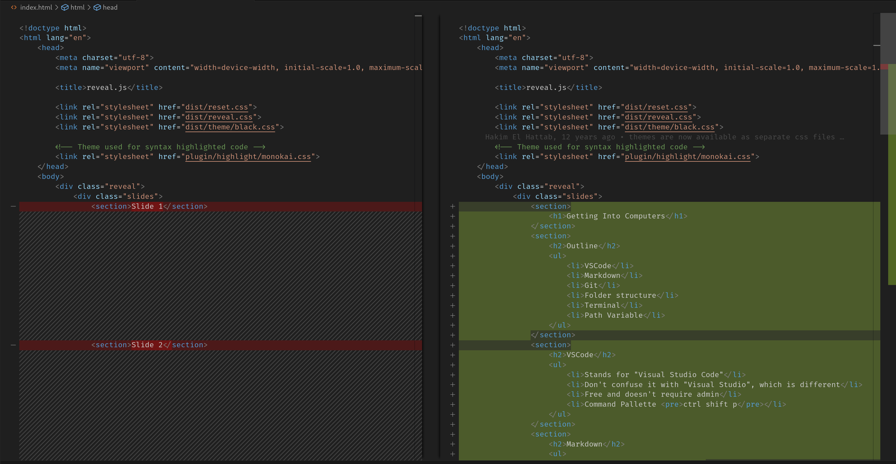
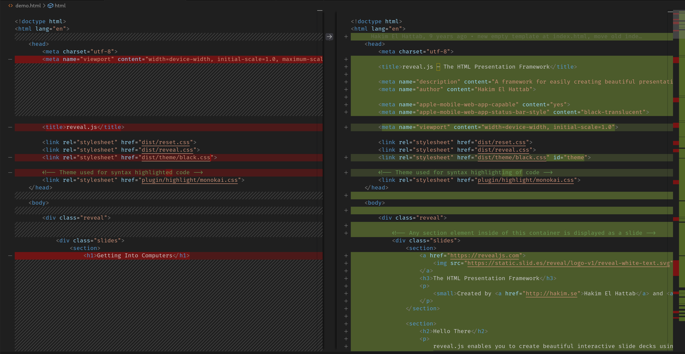
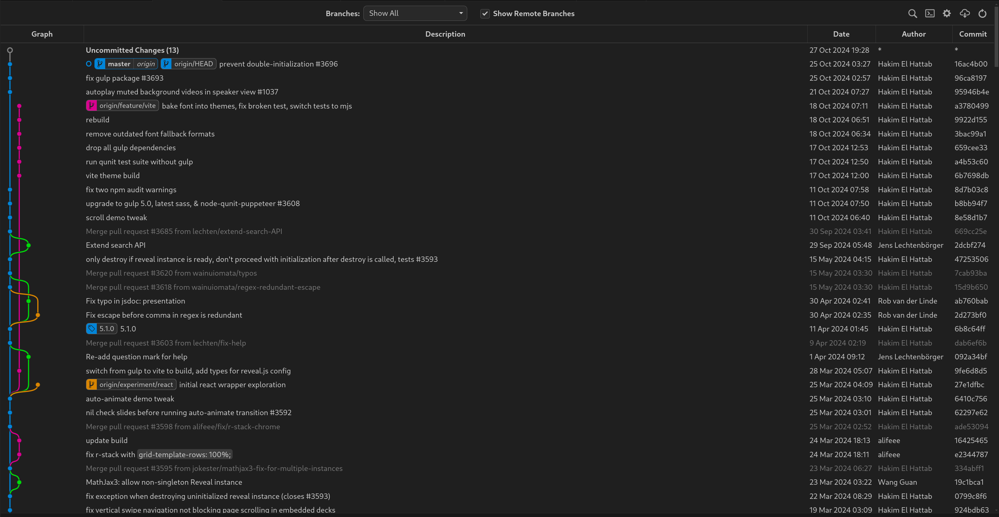
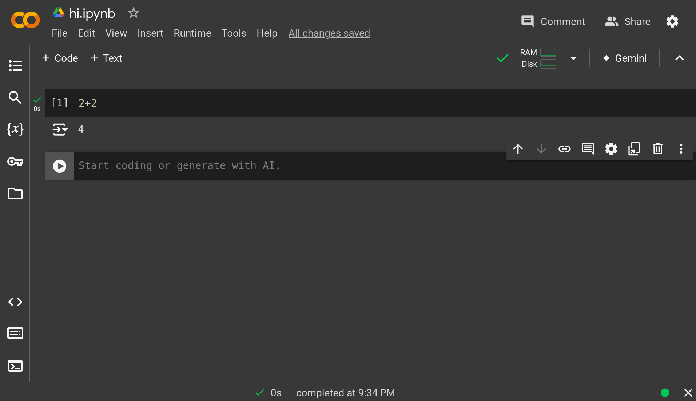

Outline
- Folder structure
- Terminal
- Path Variable
 VSCode
VSCode Markdown
Markdown Git
Git Python
Python
Folder Structure
- Save things below your user
- avoid OneDrive
- mac is forward
/
and windows is backward \
Terminal
- A single "." means current folder
cd .
- ".." means up one folder
cd ..
- "~" means the home folder
cd ~
- "$" at the beginning of commands is just the prompt. Don't include it in the command.
$ eval "$(ssh-agent -s)"
Terminal
- in windows, can go to terminal from file explorer
- in windows and mac, can open file exloper/finder from terminal
- full paths and relative paths
- always in a certain folder
Path
- tells the terminal (and other things) where to look for programs
VSCode
VSCode
- Stands for "Visual Studio Code"
- Don't confuse it with "Visual Studio", which is different
- Free and doesn't require admin
- Command Pallette
ctrl shift p
- Always open to a folder
Markdown
Markdown
- File Extension is .md
- File Extensions in general
- Get the Cheat Sheet
- Open preview to side
- README.md
track changes

compare files

Git graph

GitHub
Python
Google Colab
- Get started easily
- Jupyter Notebooks
